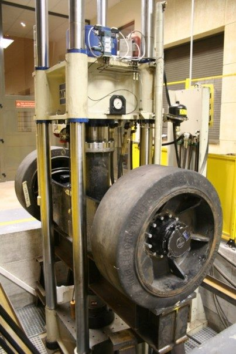

Equipamiento
Infraestructura para ensayar desde una probeta hasta un edificio
Disponible para proyectos de I+D y para servicios a empresas en el Campus de Gijón.
1000 kNmáquina universal MTS de mayor capacidad
200 Hzensayos de fatiga por resonancia (RUMUL, 200 kN)
500 N·mtorsión en equipo axial-torsional
750 kNmarcos de ensayo con vigas soporte de hasta 3 m

Máquinas uniaxiales
- 5 máquinas universales MTS con capacidades de 1000, 250, 100 y 50 kN
- Ensayos estáticos y dinámicos, actuador de 200 mm de recorrido
- Control computarizado de fuerza y desplazamiento
- Máquina de resonancia RUMUL: 200 kN, hasta 200 Hz
Axial-torsional y marcos
- Marco Walter+Bai 100 kN con bastidor para piezas de grandes dimensiones
- Walter+Bai axial-torsional: 100 kN estático, 60 kN dinámico, 500 N·m, ±45°
- 3 marcos de ensayo de hasta 750 kN, con células de carga desde 100 kN y vigas soporte de hasta 3 m de largo
Medida
- ARAMIS 5D: correlación digital de imágenes
- Extensómetros para medida precisa de deformaciones
- Cámara termográfica
- LVDT, galgas extensométricas y células de carga
58acelerómetros piezoeléctricos (10 mV/g – 100 V/g)
14sensores force balance Guralp para baja frecuencia
DC–5 kHzmesa vibrante, hasta 1620 N senoidal
18 canalesregistro continuo para monitorización
Sensores
- Acelerómetros Brüel&Kjær y PCB: 100 mV/g, 100 V/g de bajo peso, 10 V/g, 1 V/g y 10 mV/g
- Sensores force balance Guralp de baja frecuencia: 2 triaxiales (CMG-5TC) y 12 uniaxiales
- 4 sensores láser de desplazamiento sin contacto (0–9400 Hz)
- Vibrómetro láser Polytec (OFV-525 / OFV-500-S)
- Células de carga, micrófono y registro de velocidad del aire, temperatura y humedad
Adquisición
- National Instruments CompactDAQ: 4 chasis, módulos NI-9234, 9235, 9236 y 9237
- Equipo NI-4472 / PCI-6221 de 8 canales de alta precisión
- TEAC LX-120 de 16 canales
- 2 equipos Guralp de registro continuo (18 canales)
Excitación
- Martillos de impacto pequeños (086C05, 086D05) y medio (086C41)
- Excitadores electrodinámicos MB-Dynamics Modal 25, APS400 (450 N) y APS300 portátil
- Mesa vibrante LDS v650 + Centrotécnica EST 440 (440×440 mm): 1090 N random, 25,4 mm p-p, 1,4 m/s, 723 m/s²
Software comercial
ARTeMIS Modal Pro (OMA / EMA)ABAQUSRFEMANSYS AqwaFe-SafeSWANMATLABLabVIEWLaser Premium (control de vibraciones)
Software de desarrollo propio
ProFatigueProViscoProLocalProJoint
ProFatigue permite la evaluación probabilística de resultados de fatiga y el ajuste de curvas S-N basado en el modelo de Castillo-Canteli.